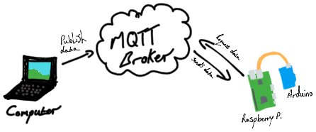

D.I.N.A
The Digitally Integrated Networking Assistant (D.I.N.A) is a home automation system capable of managing and maintaining a house as well as set reminders and alarms.

Currently in its early stages of development, D.I.N.A is a prototype system, proving concept of its design and functionality with promising iterations in the near future.
D.I.N.A is a very simple system, she is a voice activated home automation system written in python. She consist of a few componants, a raspberry pi, an arduino uno and an MQTTbroker such as hivemq are required.
How does it work?
When people talk we create audio waves. How do we understand what people are saying? Just like humans, the computer needs to learn every word to be able to understand a sentence, this involves either creating your own data base of the english language along with the associate sound of each word or, import a package like I have.
Once the package is imported we can now begin by speaking, this audio wave is collected by your microphone and processed by the recogniser package which converts it in to what is called a String. Once processed in to a string we can "split" the sentence, this gives each string in our sentence a number from 0 and increments by 1. Our audio wave has now been processed and we can start manipulating the sentence, different methods can be used for this such as "popping" (removing) each word we do not need or, scan through each index (or number) in our sentence to find words associated to methods we have already defined by us.
We can create methods for playing songs,opening doors or even both. We can use key words like "play" and "open" that, if in the sentence, our ai assumes we want to use that method and it will futher break down the sentence to find key values to execute on.
To send data from one device to another we can use an MQTT broker which essentially is a middle man to recieve the data from a 'publisher' who publishes the data to the broker and send it to a 'subscriber' or 'subscribers' who are subscribed to the broker. You can use a public broker however, someone may be able to access the data you send and tamper with it so it is more secure to set up a private broker to send data more securely.
Once the data has been sent to the broker, then the broker will send that data to the raspberry pi, the raspberry pi can then send the data to the arduino where it will complete a function such as opening a door or turning on lights.